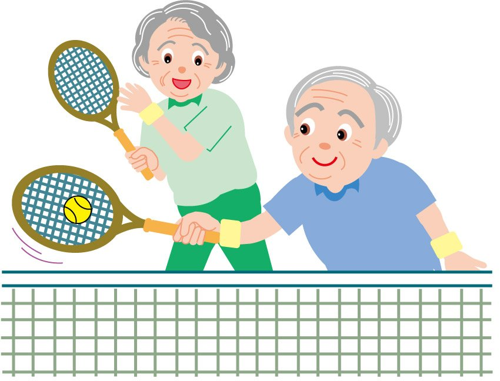

Age Can Kiss My Ace

The ball bounces off the hard, green surface of the court and into your sweaty palm as your concentration deepens. Your anticipation heightens as you strategize your next move. You throw the ball up in the air, and in one fluid motion you serve to commence the point. There is nothing quite like that rush of adrenaline that is generated the moment the ball makes perfect contact with the center of your racket. Your eyes follow the ball's trajectory with pretension, as your opponent braces for their chance at reprisal. This may all seem very intense but this is the excitement and innervation stimulated by a simple game of tennis .
And click to find out what's even better...
Imagine that!
You can play tennis even when you're old and wrinkly!

- Tennis
- ♦ A game in which two or four players strike a ball with rackets over a net stretched across a court.
- In Comparison to Golf
- ♦ Similar to the reputation golf has, tennis is a social sport that people of all ages can participate in. BUT unlike golf, tennis requires endurance and constant body movement in every point, including when waiting for your oponent to return the ball.
Pros/Cons of Being A Tennis Player
| Pros | Cons |
|---|---|
Physical Advantages
| Physical Disadvantages
|
Mental Advantages
| Expense Disadvantages
|
Social Advantages
|

Enter your 3 health and/or social goals
that you wish to gain from playing tennis as a mental note.
Then come back in a couple of months and
see if you have met at least 2 of your goals.
that you wish to gain from playing tennis as a mental note.
Then come back in a couple of months and
see if you have met at least 2 of your goals.